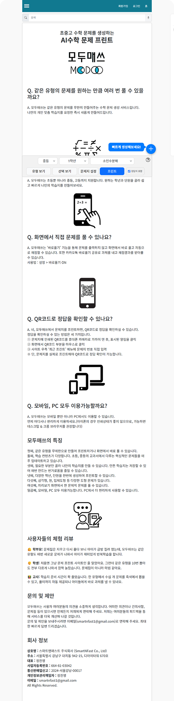
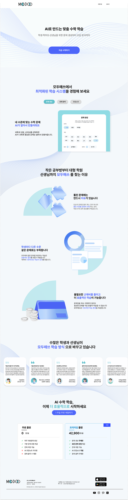
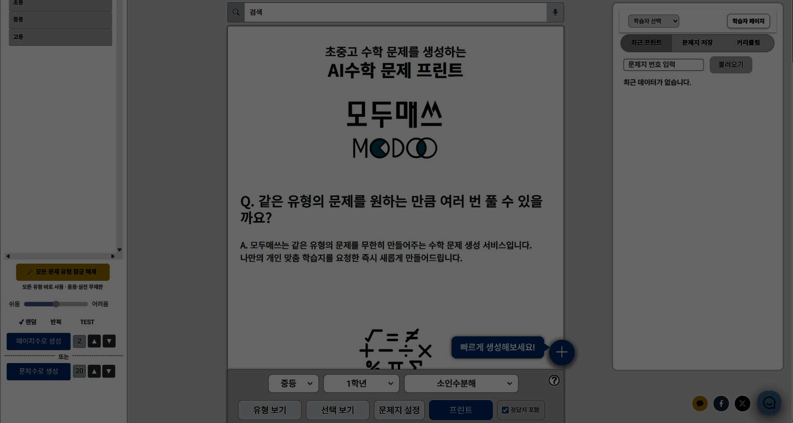
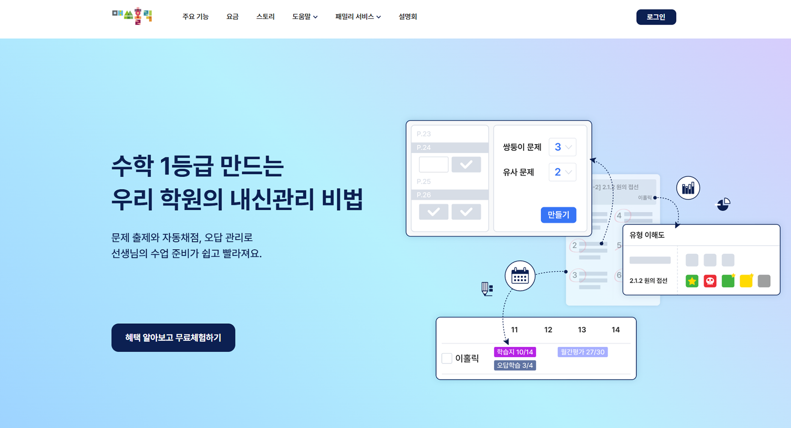
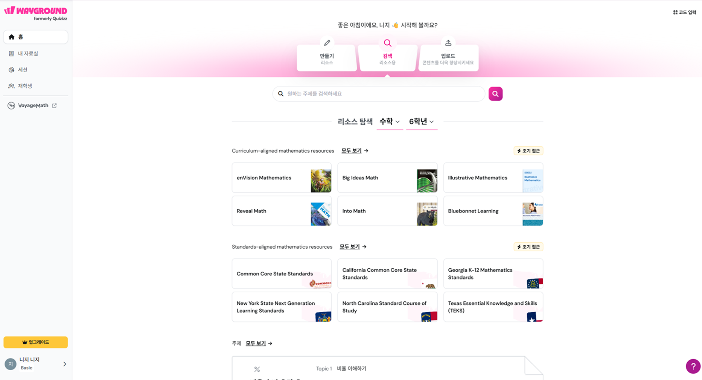
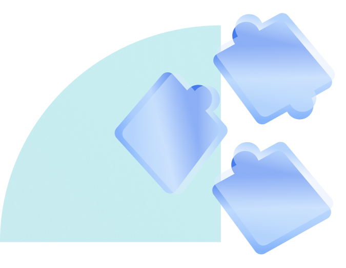
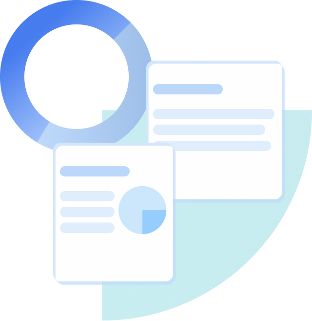
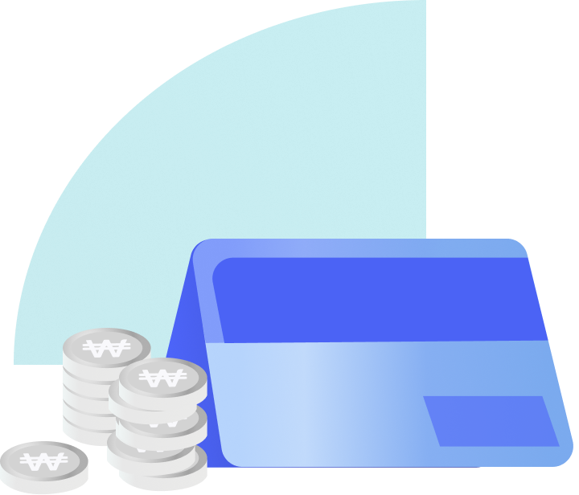

정체성 불명확
프린트·바로풀기 모드를 바꿔도 메인이 그대로라, 무엇을 하는 서비스인지 한눈에 와닿지 않는다.
복잡한 기능 중심 구조를 사용자 관점에서 분석해,
누구나 쉽게 학습을 시작하도록 다시 설계했습니다.
사용자 분석 · 정보 구조 설계
UIUX 디자인 · 프로토타입
HTML · CSS · JS 구현


기존 메인 한 장에 서비스 소개·문제 생성·학습 자료·Q&A가 동시에 등장합니다. 사용자가 가장 먼저 마주하는 화면을 분석해 이탈을 부르는 4가지 문제를 정의했습니다.

프린트·바로풀기 모드를 바꿔도 메인이 그대로라, 무엇을 하는 서비스인지 한눈에 와닿지 않는다.
메인에 모든 기능이 한 번에 쏟아져, 무엇부터 해야 할지 몰라 이탈로 이어진다.
제목·기능·안내가 모두 같은 비중으로 놓여, 무엇이 먼저인지 시선의 우선순위가 사라진다.
"바로풀기"가 서로 다른 페이지로 향하는데 이름이 같고, 풀이 중에도 "선택" 버튼이 남아 시선이 분산된다.
방향을 잡기 위해 학습 콘텐츠 서비스의 주요 화면을 살펴봤습니다.
학습 유도를 위하여 기능을 늘어놓지 않고, '지금 할 일' 하나를 가장 앞에 둡니다.


모두매쓰의 수많은 기능을 분리해 명확한 사용자 과정을 만들어야 한다.
사용자는 기능 목록보다
"지금 무엇을 해야 하는가"를 먼저 찾는다.
좋은 화면은 기능을 나열하지 않고
핵심 행동 하나를 가장 먼저 보여준다.
학습 서비스의 완주는 결국
신뢰의 흐름에서 시작된다.
"메인에서 서비스 정체성을 알 수 있도록,— 리뉴얼 개선 방향
핵심 기능에 충실한 사이트로."
핵심 과업까지의 동선을 재설계해 사용 과정에서 불편을 해소한다.
P3 해결한눈에 들어오는 레이아웃·카피·CTA로 혼란스러운 메인을 정리한다.
P1 · P2 해결기능 없는 버튼은 지우고 핵심 버튼의 가독성과 우선순위를 높인다.
P4 해결복잡한 전체 여정을 단순한 선형 흐름으로 재정의했습니다.
네 가지 문제를 메인·전체 흐름·핵심 인터랙션 세 갈래로 나눠 화면으로 증명했습니다.
정보 과잉의 긴 단일 스크롤을 목적별 섹션으로
정돈된 흐름으로 재구성해 스크롤 피로를 줄였습니다.
정보 과잉의 긴 스크롤
목적별 섹션으로 정돈
프레임 위에 마우스를 올리면 자동 스크롤이 멈춥니다

수많은 수학학습 사이트 중 왜 모두매쓰를 사용해야 하는지에 대한 소개 페이지.
시작 및 회원가입을 유도하는 설득 페이지로 구성했습니다.

문제생성·문제풀기·오답노트 등 학습 공간을 메인 소개 페이지와 분리했습니다.
학습 중 원치 않는 사이트 소개나 FAQ 없이 집중할 수 있습니다.

나의 이용권·업그레이드·회원 정보 등 학습 설정을 위한 개인 페이지로 구성했습니다.
메인 상단의 배경 무드를 세 방향으로 비교했습니다.
메시지를 가리지 않으면서도 'AI 학습'의 인상을 주는 시안을 골랐습니다.


Version B — 한 줄 메시지와 CTA를 방해하지 않으면서,
잔잔한 라인이 '맞춤·생성'의 결을 은은하게 전합니다.
 VS Code
HTMLHTML
CSSCSS
JSJavaScript
VS Code
HTMLHTML
CSSCSS
JSJavaScript
문제 정의 · 목표 수립
Figma 시스템 · 화면 설계
HTML · CSS · JS 100%
GitHub Pages 릴리즈
정량 수치 대신, 이번 개선이 향하는 방향을 정의했습니다.
명확한 메인·CTA가 첫 가입 장벽을 낮춘다.
PRIMARY · EXPECTED최단 경로 여정으로 이탈 구간을 줄인다.
PRIMARY · EXPECTED마이페이지·오답노트가 돌아올 이유를 만든다.
EXPECTED프린트 동선을 표면화한다.
EXPECTEDAI 해설 가치로 전환을 유도한다.
CONVERSION · EXPECTED버튼 다이어트로 인지 부하를 낮춘다.
EXPECTED※ 수치는 검증 전 기대 방향입니다.
"더하는 것보다 무엇을 덜어낼지
정하는 일이 더 어렵고, 더 중요했다."
좋은 UX는 기능을 나열하는 게 아니라, 사용자가
목표에 가장 빨리 닿도록 돕는 것이었습니다. 모두매쓰의 메인은
모든 걸 보여주려다, 정작 아무것도 안내하지 못하고 있었습니다.
이번 리뉴얼에서 가장 큰 결정은 '추가'가 아니라 '제거'였습니다.
중복 버튼을 지우고, 핵심 행동 하나를 가장 앞에 두는 것.
사용자를 위한디자인은 결국 선택과 절제의 문제임을 배웠습니다.